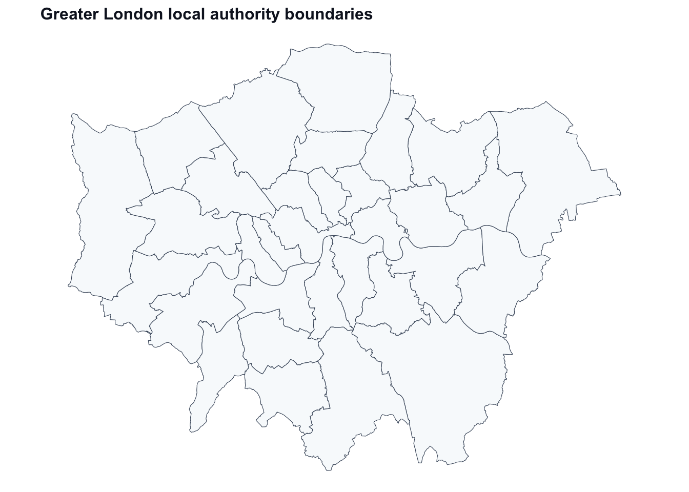
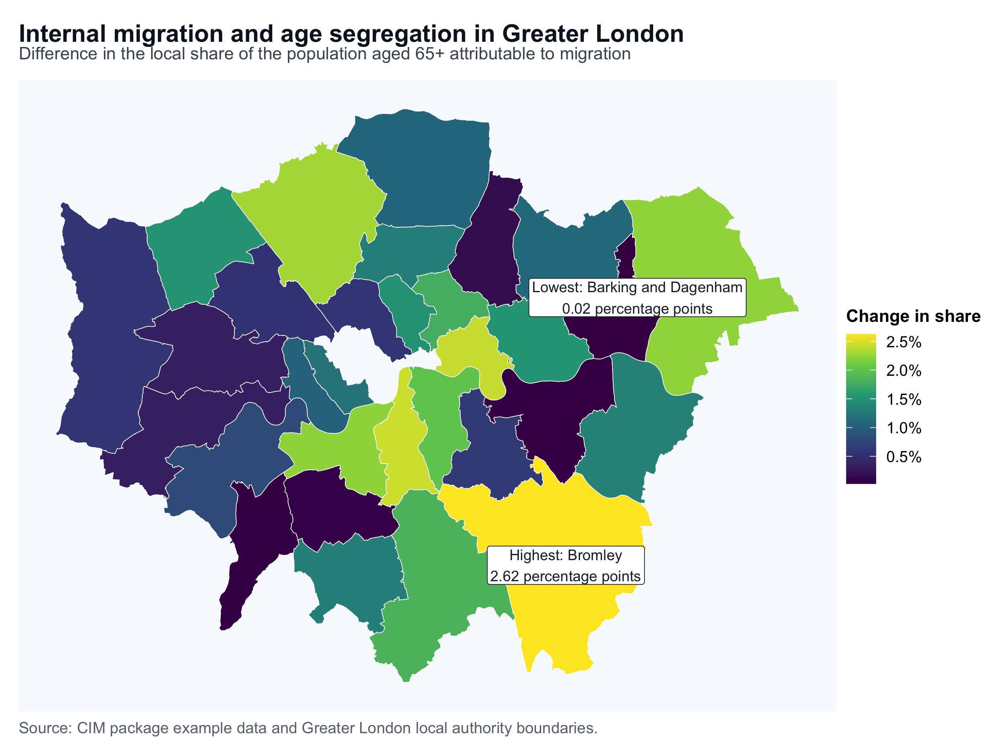

Introducing the R Package CIM
R Markdown
This post introduces our recently published R package, CIM, to measure the impacts of migration on local population structures. We developed the methodology in this paper in 2018. This paper is one of the top ten most viewed articles in Population Studies
Installing
install.packages("CIM")
library(CIM)This package enables quantifying the impact of internal migration on age, gender, educational population structures and inequality.
Example
Here I provide a short example of how this can be used to measure the impact of internal migration on residential age segregation in the Greater London Metropolitan Area, England, drawing on one-year migration data by age bands (i.e. 1-14, 15-29, 30-34, 45-64 and 65+) at the local authority level, 2011 UK Censuses. Local authorities comprising outside the Greater London Metropolitan Area are collapsed into a single area, labelled “the Rest of the UK”. I use the same approach employed by Rodríguez-Vignoli and Rowe (2017) to measure the impact of internal migration on residential educational segregation in the Greater Santiago, Chile.
Computation
Compute and print the CIM outputs
CIM.duncan <- CIM(pop65over, pop1_14, pop15_29, pop30_44, pop45_64, calculation = "duncan", numerator = 1, DuncanAll = TRUE)
CIM.duncan$duncan_index
## [1] 0.02813039Interpretation
The CIM for the Duncan index of dissimilarity indicates that internal migration has contributed to increase age segregation of the population aged 65 and over in the Greater London Metropolitan Area by 2.81% between 2010 and 2011 i.e. from 16.2% in 2010 to 19% in 2011.
Visualisation
To visualise where the population aged 65 and over in the Greater London Metropolitan Area is concentrating, we can map differences in the spatial distribution of this population across local authority districts.
First install and load the needed packages
install.packages(c("sf", "dplyr", "ggplot2", "viridis"))
library(sf)
library(dplyr)
library(ggplot2)
library(viridis)NOTE: Download a shapefile containing the Greater London Local Authority Districts from the shapefile folder from this github repository
NOTE: The Local Authority Districts for the City of London and Westminster in our shapefile are combined to make our shapefile consistent with our migration data.
Read the shapefile.
library(sf)
shapefile_path <- file.path("shapefiles", "greater_london", "Greater_London_districts.shp")
if (!file.exists(shapefile_path)) {
stop("Shapefile not found at: ", shapefile_path)
}
Greater_London <- st_read(shapefile_path, quiet = TRUE)Plot the shapefile
ggplot(Greater_London) +
geom_sf(fill = "#f8fafc", colour = "#475569", linewidth = 0.2) +
labs(title = "Greater London local authority boundaries") +
theme_void(base_size = 11) +
theme(
plot.title = element_text(face = "bold", colour = "#111827", size = 12),
plot.background = element_rect(fill = "white", colour = NA)
)
Obtain the differences in the spatial distribution of the population aged 65 and over across local authority districts using the CIM.Duncan function:
CIM.duncan <- CIM(pop65over, pop1_14, pop15_29, pop30_44, pop45_64, calculation = "duncan", numerator = 1, DuncanAll = TRUE)
Dun_65over <- CIM.duncan$duncan_resultsVisualise the results
head(Dun_65over)
## ASFVShare_cg ASCFVShare_cg ASFVShare_ref ASCFVShare_ref
## Barking and Dagenham 0.01745867 0.02110757 0.01722178 0.01758504
## Barnet 0.06271777 0.05474050 0.03975623 0.03996727
## Bexley 0.03017273 0.02974775 0.01669010 0.01719928
## Brent 0.02998740 0.03487968 0.03538955 0.03798874
## Bromley 0.05326562 0.05218904 0.02702766 0.02666937
## Camden 0.03054341 0.02879095 0.03624574 0.03625877
## ASShareFV_diff ASShareCFV_diff
## Barking and Dagenham 0.0002368912 0.003522525
## Barnet 0.0229615445 0.014773235
## Bexley 0.0134826294 0.012548474
## Brent 0.0054021543 0.003109066
## Bromley 0.0262379625 0.025519669
## Camden 0.0057023363 0.007467818Append these data to the shapefile using the local authority names as joiner
library(dplyr)
dun_df <- data.frame(Dun_65over, name = rownames(Dun_65over), row.names = NULL)
dun_df <- subset(dun_df, name != "totalCol")
Duncan_65p <- left_join(Greater_London, dun_df, by = "name")
head(st_drop_geometry(Duncan_65p))
## label name ons_label ASFVShare_cg ASCFVShare_cg ASFVShare_ref
## 1 02AF Bromley 00AF 0.05326562 0.05218904 0.02702766
## 2 02BD Richmond upon Thames 00BD 0.03117355 0.03061757 0.02315899
## 3 02AS Hillingdon 00AS 0.03495441 0.03511163 0.02920845
## 4 02AR Havering 00AR 0.03873527 0.03308205 0.01642682
## 5 02AX Kingston upon Thames 00AX 0.02153607 0.02244129 0.02197114
## 6 02BF Sutton 00BF 0.02869004 0.02681937 0.01560226
## ASCFVShare_ref ASShareFV_diff ASShareCFV_diff
## 1 0.02666937 0.0262379625 0.025519669
## 2 0.02254429 0.0080145627 0.008073282
## 3 0.02856140 0.0057459601 0.006550226
## 4 0.01652916 0.0223084481 0.016552889
## 5 0.02044645 0.0004350701 0.001994836
## 6 0.01630248 0.0130877815 0.010516890Create a map using ggplot.
plot_data <- Duncan_65p |>
filter(!is.na(ASShareFV_diff))
map_labels <- bind_rows(
slice_max(plot_data, ASShareFV_diff, n = 1, with_ties = FALSE),
slice_min(plot_data, ASShareFV_diff, n = 1, with_ties = FALSE)
) |>
mutate(
label = paste0(
if_else(ASShareFV_diff == max(plot_data$ASShareFV_diff), "Highest: ", "Lowest: "),
name,
"\n",
round(ASShareFV_diff * 100, 2),
" percentage points"
)
)
label_points <- suppressWarnings(st_point_on_surface(map_labels))
ggplot(plot_data) +
geom_sf(aes(fill = ASShareFV_diff), colour = "white", linewidth = 0.18) +
geom_sf_label(
data = label_points,
aes(label = label),
size = 3,
linewidth = 0.2,
label.padding = unit(0.18, "lines"),
fill = "white",
colour = "#1f2937"
) +
scale_fill_viridis_c(
option = "viridis",
labels = scales::label_percent(accuracy = 0.1),
name = "Change in share"
) +
labs(
title = "Internal migration and age segregation in Greater London",
subtitle = "Difference in the local share of the population aged 65+ attributable to migration",
caption = "Source: CIM package example data and Greater London local authority boundaries."
) +
theme_void(base_size = 12) +
theme(
plot.title = element_text(face = "bold", colour = "#111827", size = 14),
plot.subtitle = element_text(colour = "#4b5563", size = 10, margin = margin(b = 10)),
plot.caption = element_text(colour = "#6b7280", size = 9, hjust = 0),
legend.position = "right",
legend.title = element_text(face = "bold", size = 10),
legend.text = element_text(size = 9),
panel.background = element_rect(fill = "#f8fafc", colour = NA),
plot.background = element_rect(fill = "white", colour = NA),
plot.margin = margin(8, 10, 8, 10)
)
Migration had the largest estimated contribution to the concentration of residents aged 65+ in Bromley (2.62 percentage points), while the smallest contribution was in Barking and Dagenham (0.02 percentage points).
References
Rodríguez-Vignoli, Jorge, and Francisco Rowe. 2018. “How is internal migration reshaping metropolitan populations in Latin America? A new method and new evidence.” Population Studies 72 (2): 253-273. https://doi.org/10.1080/00324728.2017.1416155
Suggested citation
Francisco Rowe (2019-10-11). Introducing the R Package CIM. Francisco Rowe. https://franciscorowe.com/post/2019-01-31-r-rmarkdown/
BibTeX
@online{rowe201920190131rrmarkdown,
author = {Francisco Rowe},
title = {Introducing the R Package CIM},
year = {2019},
date = {2019-10-11},
url = {https://franciscorowe.com/post/2019-01-31-r-rmarkdown/}
}